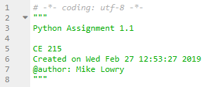

Python Essentials
A person who is fluent in a different computer language or someone learning for the first time needs to answer the following ten essential questions about Python. The first four are answered on this page:
The next six questions are answered on subsequent pages:
The organization of this website corresponds to the syllabus schedule for my CE 215 course.
Additionally, this website has pages about mathematical analysis (solving roots, minima/maxima, derivatives, and integration), data analysis, statistical analysis (linear regression), matrix analyis, and gis analysis. These additional topics might not be relevant for some readers and could be skipped.
Writing Code Comments and Documentation
In any computer language “comments” are used to document the program so that you or someone else can understand the
code when reading it later. Comments do nothing, i.e. no data is read into the computer and no calculations are
performed. Everything in a comment is ignored when you hit Run. In Python, the primary way to designate a comment
is to type the hash character # followed by the comment. In Spyder, comments created with a hashtag are given a gray color.
The other way to provide documentation is to surround text with three double-quotes """, which Spyder gives a green color.
The following is a description of four types of comments and documentation, from the most general to the most specific: Docstring, Decorative Block Comment, Block Comment, and Inline Comment.
Docstring
Docstrings (Documentation Strings) are used to describe broad, general code overview explanations. Docstrings begin and end with three double-quotes """.
They are used at the beginning of a script and within functions (See Defining Functions). Spyder
automatically creates a docstring at the beginning of a new Python file. In Spycer docstrings are given a green color.

You should add text to Spyder’s auto-generated docstring. The first line should be a short name for the script followed by a blank line, for example the assignment number. The next few lines should provide description, for example the course name, the date, and your name.
Decorative Block Comment
Decorative Block Comments are the next level of code explanation. They are used to separate code into sections, similar to Headings in Word documents. There is not a specific way to do a decorative block comment, instead computer programmers use their creativity to decide how to “decorate” the comment. Spyder, provides a decorative block comment that is entered by clicking Edit/Add block comment (The shortcut is Ctrl+4). Descriptive text is written in the middle section. For example, to lable and separate problems in an assignment.

Block Comment
Block Comments are used to explain complicated “blocks” of code. They begin with the # with one space before the comment.
They are on their own line, but can be multiple lines long. They start with a capital letter and end with a period and are preferably sentences.
Inline Comment
Inline Comments are used sparingly with the intent to only provide clarity
for things that are not obvious, such as units for a variable. They are on the same line as what they are explaining.
They have two spaces before the # and one space afterward. They start with a capital letter and end with a period and are preferably sentences.
>>> # This is a block comment. These lines of code explain this small block of code.
>>> # Block comments precede a block of code to provide explanation.
>>> b = 4 # Base dimension in inches. This is an inline comment.
>>> h = 8.6 # Height in inches. This is another inline comment.
>>> a = b * h
>>> print(a)
34.4
Tip
To copy code blocks from this website, click >>> in the upper right corner. Then, select the code and hit
Ctrl c to copy. Then, in the Spyder Console or Editor place your cursor and hit Ctrl v to paste. In some examples on this website print() is not included, so
if you are pasting into the Editor, you may need to add print() to explicitly print something to the console.
Note
Python programmers try to write code that is very easy to read. Consequently, “Pythonic” style uses full words for variable names
as much as possible. For example rather than using b and h you could use base and height. For
long scripts this is especially nice because you might forget what b and h stand for later in the code. Pythonic
style uses all lowercase with multi-word variables separated with an underscore.
>>> base = 12
>>> height = 18
>>> cross_area = base * height
>>> print(cross_area)
Import Modules
In Python, a module can be imported to provide special capabilities. A package is a collection of modules. Packages and modules are written by different groups of people and are often put on the internet for free download and use. The Anaconda installation for Python includes many of the most popular packages and modules (See How do I install Python?). The contents and organization of a package/module is typically documented on a website created by the authors of the package/module (There are also “built-in” modules with explanation on the Python website.)
For illustration, the networkx package provides the ability to create and analyze networks.
>>> import networkx
>>>
>>> # This code block creates a small street network.
>>> # This code block is shown here to illustrate how to import and use a package.
>>> city = networkx.Graph() # Creates an empty network to be filled with the following lines.
>>> street_list = [(1, 3), (3, 4), (4, 5), (5, 2), (3, 6), (4, 7),(5, 8), (6, 7),
... (7, 8), (6, 9), (7, 10), (8, 11), (9, 10), (10, 11), (9, 12), (11, 13)]
>>> city.add_edges_from(street_list)
>>> networkx.draw(city, with_labels=True) # Draws the network shown below.

The code block above uses capabilities from networkx. The first is Graph() which provides a means to
create an empty network. Another is draw to draw a figure of the network. These capabilities were
accessed by writing the name of the package or module plus . plus the name of the capability, ie. networkx.Graph() and
networkx.draw(). Sometimes it is tedious to write the whole name of the package or module, so programmers choose
to do the import with an alias. The alias is usually only two letters to save time writing. Many packages and
modules have typical alias names. For example, nx is the typical alias used for networkx. The
word as specifies the alias. For example, the above code block could also be written like this:
>>> import networkx as nx
>>>
>>> # This time the module was imported with an alias name. The alias follows the word "as".
>>> city = nx.Graph()
>>> street_list = [(1, 3), (3, 4), (4, 5), (5, 2), (3, 6), (4, 7),(5, 8), (6, 7),
... (7, 8), (6, 9), (7, 10), (8, 11), (9, 10), (10, 11), (9, 12), (11, 13)]
>>> city.add_edges_from(street_list)
>>> nx.draw(city, with_labels=True)
Another way to import with less writing is to use from. The syntax is from package import capability. This
approach saves time writing because for the rest of the script you only need to write the capability. Any object
from a higher level package or module can be imported this way. For example, if you create your own module with a bunch
of functions, then you can import just one of the functions like this: from module import function.
Using the from ... import ... format, the example above can be written like this:
>>> from networkx import Graph
>>> from networkx import draw
>>>
>>> # This is shows the syntax 'from' package 'import'.
>>> city = Graph()
>>> street_list = [(1, 3), (3, 4), (4, 5), (5, 2), (3, 6), (4, 7),(5, 8), (6, 7),
... (7, 8), (6, 9), (7, 10), (8, 11), (9, 10), (10, 11), (9, 12), (11, 13)]
>>> city.add_edges_from(street_list)
>>> draw(city, with_labels=True)
In my course CE 215 we frequently use the packages matplotlib, numpy, and pandas which
are imported like this:
>>> import matplotlib.pyplot as plt
>>> import numpy as np
>>> import pandas as pd
...
...
The packages matplotlib`, numpy, and
pandas are essential packages for math, science, engineering, and data analysis. Note that all three are
typically imported using alias names as shown.
In my course CE 215 we also use a package called scipy. This is another popular scientific package with many useful
modules. The scipy documentation says to use the from ... import ... format. The following modules
are used in CE 215 (to be placed just below pandas in the import code block above).
>>> from scipy import optimize
>>> from scipy import misc
>>> from scipy import integrate
We will also use statsmodels which is imported like this:
>>> import statsmodels.api as sm
Although people import packages in a variety of ways, the Google Style Guide recommends to:
Place all imports at the top of the script
Include one line space below the introductory docstring, one line space between import groups, and two line spaces after all imports.
Only import one module per line.
First import built-in modules in alphabetical order, then third-party modules in alphabetical order, and finally personal modules.
For example:
>>> import os
>>> import sys
...
>>> import matplotlib.pyplot as plt
>>> import numpy as np
>>> import pandas as pd
>>> from scipy import optimize
>>> from scipy import misc
>>> from scipy import integrate
>>> import statsmodels.api as sm
...
>>> from civil import environmental as ee
>>> from civil import geotech
>>> from civil import structures
>>> from civil import water
...
...
The packages os and sys are common built-in packages, included above for illustration.
The civil package contains personal modules that the students will create, included here for illustration.
Math Calculations and Printing
The official Python Tutorial begins its introduction by showing how the Console (also called the Interpreter) can be used as a calculator (See An Informal Introduction to Python).
Indeed the Console can be useful for quick calculations or to check output. But for long procedures (i.e. multiple calculations in a sequence) it is better to use the Editor. The Editor allows you to save the code as a “script” and re-run the script later. Furthermore, if you only use the Console, then once you close Spyder all the variables will be lost.
Math in Python follows the usual order of operations, namely:
Order of Operation (and note) |
Python Symbol |
|---|---|
|
|
|
|
|
|
|
|
Note an exponent in Python is different than Excel and other languages. It may take some getting used to.
>>> # Example math equation.
>>> answer = 5.3 + (4.6 - 2.5)**2 * 3/6 - 1
>>> print(answer)
6.504999999999999
We can improve the way output looks by using round() to a specified number of decimals places. One approach is to
overwrite the answer with the rounded version just before printing. The second parameter of round() is the number of digits.
>>> # The same example, rounded to three digits.
>>> answer = 5.3 + (4.6 - 2.5)**2 * 3/6 - 1
>>> answer = round(answer, 3)
>>> print(answer)
6.505
Better still, we can include explanatory text in the print statement. The print() function can include any number of
items, separated by ,. The output from print() will include blank space between items.
>>> # Shows how to print multiple things together.
>>> print("The answer is", answer, "feet.")
The answer is 6.505 feet.
If we are printing more than one result, then we might want to include blank lines between output or groups of output.
There are two ways to print a blank line. One way is to write print(" ") by itself. The other way is to include
"\n" in the print statement to cause a hard return.
>>> # Print statements with blank lines inserted using a blank space " " and hard return "\n"
>>> a = 4
>>> b = 12.5
>>> x1 = a + b**2
>>> x2 = a * b
>>> x3 = a - b
>>> x4 = a*2 + b
>>> print(" ")
>>> print("The first answer is", x1)
>>> print("The second answer is", x2, "\n")
>>> print("The third answer is", x3)
>>> print("The fourth answer is", x4)
...
The first answer is 160.25
The second answer is 50.0
...
The third answer is -8.5
The fourth answer is 20.5
...
The hard return "\n" can be included anywhere in print(). And it is possible to have more than one \n.
>>> print("The answer is", x1, "\n", "and also", x2, "\n\n\n", "and", x3, "feet")
In addition to round() there are other built-in functions that are useful for math, such as absolute value abs(), summation sum(),
maximum max(), minimum min(), convert to integer int(), convert to floating point float(), and convert to string str().
Trigonometry functions can be done in a variety of ways, but the perferred method is to use the numpy package, for example
np.sin(), np.cos(), np.tan(), and np.pi (Note pi does not have parenthesis). To use these functions,
include import numpy as np at the top of the script.
For example, the following is an example of how numpy is used.
>>> import numpy as np # This is imported only once, at the top of the script.
...
...
>>> phi = 30 # Angle in degrees.
>>> phi = np.deg2rad(phi) # Note you can overwrite a variable while using the variable.
>>> x = np.sin(phi)
>>> print(x) # The answer is not exactly 0.5 because numpy approximates pi to 14 decimal places.
0.49999999999999994
Pythonic Style
Python code can be written with great flexibility in style. Think of style like the way we talk (both the words we use and how we use them). I might talk differently in a casual conversation with my childhood friend compared to a formal meeting at work.
“Pythonic Style” almost always puts a space before and after *, +, -, /, and =. The intent is to make the equation
easier to read. However, judgment should be used because sometimes it is easier to read without blank spaces. For example,
I rarely put a space before and after /. Nor do I add blank spaces when variables are clearly added or subtracted within parenthesis, such y = (a+b) * (c-d).
Pythonic style also uses (as much as possible) variable names that are full words, in all lower-case, and with underscores between words, thus you would preferably use
inside_diameter instead of D for a variable name. However, sometimes for pure math, or when a formula involves well-recognized
variables, then it is acceptable to use single character names (But, never use the characters ‘l’ (lowercase letter el),
‘O’ (uppercase letter oh), or ‘I’ (uppercase letter eye) as single character variable name because they can be misread.)
Variables with a numeric subscript can be written with or without an underscoure, such as x_1 or x1, but variables
with subscripts that are words or letters for subscript should be written with an underscore, such as t_start or time_s or t_s (But NOT ts).
For example compare the following three code blocks:
>>> # Bad Pythonic Style *Do NOT write math like this!*
>>> tw=.24
>>> tf=.36
>>> b=5.75
>>> d=10.17
>>> h=d-2*tf
>>> I=1/12*(b*d**3-(b-tw)*h**3)
>>> print(I)
116.5272480000001
>>> # Good Pythonic Style
>>> t_web = 0.24
>>> t_flange = 0.36
>>> b = 5.75
>>> d = 10.17
>>> h = d - 2*t_flange
>>> inertia = 1/12 * (b * d**3 - (b-t_web) * h**3)
>>> print("Moment of inertia", inertia)
Moment of inertia 116.5272480000001
>>> # Best Pythonic Style (But sometimes this might be excessive, so use judgment).
>>> # Variable names should be lower case and separated by an underscore.
>>> # But for some math equations, single character names might be more appropriate.
...
>>> # Moment of inertia calculation for an I-beam. All input values are in inches.
>>> web_thickness = 0.24
>>> flange_thickness = 0.36
>>> base = 5.75
>>> depth = 10.17
>>> height = depth - 2*flange_thickness
..
>>> moment_of_inertia = 1/12 * (base * depth**3 - (base - web_thickness) * height**3)
...
>>> moment_of_inertia = round(moment_of_inertia, 1)
>>> print("The moment of inertia =", moment_of_inertia, "in^4", "\n")
The moment of inertia = 116.5 in^4
The “best” Pythonic style has:
docstring at top with overview information, including author and date
imports at top alphabetical
all comments start with a capital letter and end with a period and are preferably sentences
block comments precede complicated blocks of code
decorative block comments are used as section headings
inline comments are used sparingly only for non-obvious information
inline comments have two spaces before the
#and one space afterwarduse blank lines sparingly, two blank lines between major blocks (never more than 2 blank lines)
variable names are preferably full words, unless mathematic or standard equations
variable names are lower case (unless well-known mathematic variable) and words are separated by an underscore
variable names never use capital I or lowercase l or lowercase o or capital O and avoid lowercase i except as an iterator
adequate, but not excessive space between variables
good judgment for spaces before and after
*,+,-, and/include a leading zero for floating point less than one, such as
0.3always a space before and after
=always one space after a comma
,, such as in a listoutput uses
round()to reduce the decimalsprint statements include sufficient information and will print nicely
use
print(" ")orprint("\n")to provide appropriate blank lines to output
See Defining Functions: Python Functions for more Pythonic style, as well as the official Python style guide called PEP 8